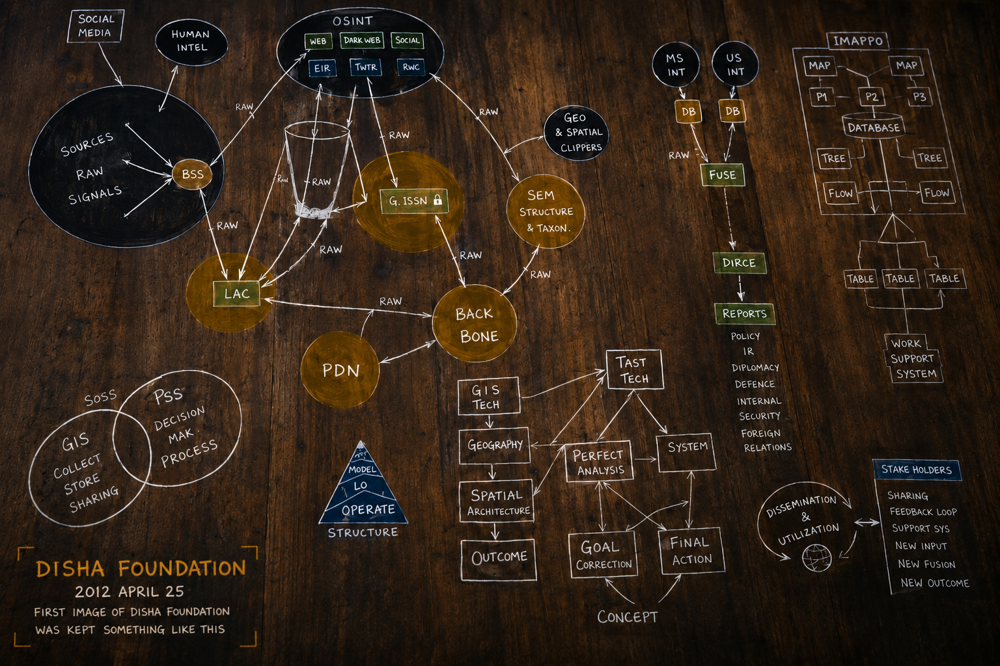

DISHA Intelligence Architecture is presented as an evidence-first civic intelligence framework for public records, cyber evidence, digital governance, and constitutional accountability in India. The whitepaper explains how DISHA organizes signals, source records, OSINT, spatial context, analysis, policy, reporting, and public memory into a defensive, policy-gated architecture intended to preserve evidence, support citizen protection, and make institutional responsibility more readable.
Read the whitepaper PDFDISHA Intelligence Architecture
A top researcher showing the power of DISHA as an evidence-first defence system.
DISHA is presented here as a premium public-interest intelligence architecture: conceived in 2012, built as a cyber-evidence and public-record system, and governed by a defensive, policy-gated doctrine.

Research whitepaper
DISHA Intelligence Architecture: Technical Whitepaper (Ver 4.2.0)
Published 2026. PDF whitepaper. Citable research record.
The foundation | 25 April 2012
It began as a hand-made intelligence sketch.
Long before data theft, digital arrest, and public cyber-risk entered daily headlines, DISHA began as a hand-drawn architecture for evidence-first defence of the citizen.
The foundation image is not decoration. It is the base record: sources, raw signals, OSINT, GIS, analysis, policy, reports, stakeholders, and public memory arranged as one defensive intelligence system.
Conceived2012
RecordedBihar Council of Science & Technology
Built forEvidence, defence, and public records

2012Foundation sketch recorded
6Operational intelligence layers
NFUNo-First-Use defensive doctrine
4.2.0Current architecture version
What DISHA can do
Convert signals into evidence, policy, and public memory.
DISHA is not a generic dashboard. It is designed to study intent, classify risk, support defensive action, preserve records, and make accountability readable for researchers, journalists, institutions, and citizens.
Its value is not only technical. DISHA shows how constitutional accountability, cyber forensics, public administration, public records, and citizen safety can be joined into one disciplined intelligence architecture.
01Collect
Signed telemetry, public records, OSINT, GIS context, and documentary inputs.
02Analyze
Intent, origin, risk, pattern, and strategic threat posture.
03Defend
Block, isolate, quarantine, revoke, rotate, and recover under policy.
04Preserve
Hash-chained records, evidence trails, reports, and public memory.
Build line
From sketch to working architecture.
The page now gives the reader the missing detail: origin, build, doctrine, source record, and public-interest use.
Foundation drawn by hand
The first DISHA architecture sketch is dated 25 April 2012. It establishes the visual grammar of sources, signals, analysis, policy, reporting, and stakeholder feedback.
Evidence practice begins
The architecture moves from concept into an evidence-and-monitoring practice, focused on citizen protection, defensive intelligence, and record preservation.
Iteration and hardening
DISHA adds reasoning, telemetry, OSINT, spatial context, risk analysis, and tamper-evident documentation discipline.
Codified as public record
The architecture is described through policy, source trails, research records, and court-related public documentation.
Six layers
The DISHA operating stack.
Status labels are deliberate. Operational means active capability or working system logic; policy-gated means the layer is controlled by doctrine and staged for safe integration.
DISHA Brain
The cognitive core for reasoning, planning, decisioning, anomaly detection, and risk scoring across the system.
Digital Soldiers
Field signal and telemetry units that collect signed information from digital environments and pass it into the intelligence core.
Security Brain
Threat analysis and pattern recognition that turns raw signals into intelligence about origin, intent, and risk.
Yudh Intelligence Layer
Strategic threat assessment - the Vyuha defence framework, which maps classical formations to defensive cyber modes through declarative, policy-gated rules and an analyzer. Orchestration is staged for integration with the control plane.
Evidence Archive
Forensic preservation, source records, hashes, time-bounded evidence trails, and citation discipline for later review.
Public Record Memory
A living archive of violations, submissions, evidence, references, and public-interest documentation.
Source code
DISHA OS - Top Confidential
The page presents source-code access as part of the evidence record, while keeping the system framed as a defensive public-interest architecture governed by policy, audit, and restraint.
No-First-Use
DISHA may defend, isolate, preserve, and recover. It is not presented as an offensive retaliation system.
Policy-gated
High-risk orchestration is staged through written rules, analyzers, and control-plane discipline.
Evidence flow
How DISHA turns activity into record.
The system is presented as an evidence engine: signal comes in, intelligence is formed, defensive action is policy-gated, and the record is preserved.
01Telemetry
Signed signal, OSINT, GIS, public record, and contextual data enter the system.
02Classify
The brain studies intent, anomaly, origin, risk, and relevance to citizen harm.
03Defend
Policy-gated defensive modes block, isolate, quarantine, revoke, rotate, and recover.
04Evidence
Records are preserved with source context, report discipline, and public memory.
Proof and record
The record, not just the claim.
DISHA is introduced through dates, documents, source trails, research claims, and public records so readers can distinguish architecture, implementation, and legal context.
2012
Foundation
First architecture sketch dated 25 April 2012, presented as the base record for the system.
2013
Operation
The concept moves from hand-drawn foundation into a continuing evidence-and-monitoring practice.
2026
Public record
Research and evidence references connect to wider constitutional and cyber-governance documentation.
Closing exhibit
The foundation remains the proof of origin.
The same hand-made foundation image is kept again at the end so the reader leaves with the record, not only the modern product framing.